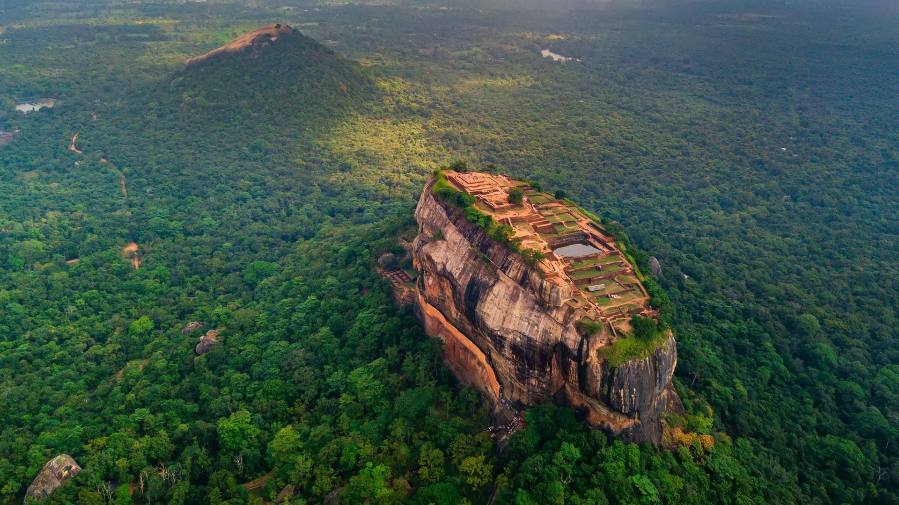
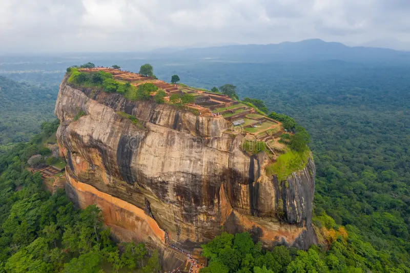

It is likely that the area around Sigiriya was inhabited since prehistoric times. There is clear evidence that the many rock shelters and caves in the vicinity were occupied by Buddhist monks and ascetics from as early as the 3rd century BCE. The earliest evidence of human habitation at Sigiriya is the Aligala rock shelter to the east of Sigiriya rock, indicating that the area was occupied circa 3000 BCE during the Mesolithic Period.
Buddhist monastic settlements were established during the 3rd century BCE in the western and northern slopes of the boulder-strewn hills surrounding the Sigiriya rock. Several rock shelters or caves were created during this period. These shelters were made under large boulders, with carved drip ledges around the cave mouths. Rock inscriptions are carved near the drip ledges on many of the shelters, recording the donation of the shelters to the Buddhist monastic order as residences. These were made in the period between the 3rd century BCE and the 1st century CE.
In 477 CE, Kashyapa I, the king's son by a non-royal consort, seized the throne from King Dhatusena, following a coup assisted by Migara, the King's nephew and army commander. The rightful heir, Moggallana, fearing for his life, fled to South India. Afraid of an attack by Moggallana, Kashyapa moved the capital and his residence from the traditional capital of Anuradhapura to the more secure Sigiriya. During King Kashyapa's reign (477–495 CE), Sigiriya was developed into a complex city and fortress. Most of the elaborate constructions on the rock summit and around it, including defensive structures, palaces, and gardens, date from this period.
The Cūḷavaṃsa describes King Kashyapa as the son of King Dhatusena. Kashyapa murdered his father by walling him up alive and then usurping the throne which rightfully belonged to his half-brother Moggallana, Dhatusena's son by the true queen. Moggallana fled to India to escape being assassinated by Kashyapa, but vowed revenge. In India he raised an army with the intention of returning and retaking the throne of Sri Lanka.
Expecting the inevitable return of Moggallana, Kashyapa is said to have built his palace on the summit of Sigiriya as a fortress as well as a pleasure palace. Moggallana finally arrived, declared war, and defeated Kashyapa in 495 CE. During the battle Kashyapa's armies abandoned him and he committed suicide by falling on his sword.
It is said that being too proud to surrender he took his dagger from his waistband, cut his throat, raised the dagger proudly, sheathed it, and fell dead.
Moggallana returned the capital to Anuradhapura, converting Sigiriya into a Buddhist monastery complex, which survived until the 13th or 14th century. After this period, no records are found on Sigiriya until the 16th and 17th centuries, when it was used briefly as an outpost of the Kingdom of Kandy.
Alternative stories have the primary builder of Sigiriya as King Dhatusena, with Kashyapa finishing the work in honour of his father. Still other stories describe Kashyapa as a playboy king, with Sigiriya his pleasure palace. Even Kashyapa's eventual fate is uncertain. In some versions he is assassinated by poison administered by a concubine; in others he cuts his own throat when deserted in his final battle.
Still further interpretations regard the site as the work of a Buddhist community, without a military function. This site may have been important in the competition between the Mahayana and Theravada Buddhist traditions in ancient Sri Lanka.
In Professor Senarath Paranavithana's book The Story of Sigiri, King Dathusena is said to have taken the advice of the Persian Nestorian Priest Maga Brahmana on building his palace on Sigiriya. According to Paranavithana, during this period over 75 ships carrying Murundi soldiers from Mangalore arrived in Sri Lanka and landed in Chilaw to protect King Dathusena, most of them Christians. King Dathusena's daughter was married to Migara, a Christian and the commander of the Singhalese army.
According to Leonard Pinto, Paranavitana's story is not widely accepted as it is contrary to recorded Mahavamsa textual sources from this period.